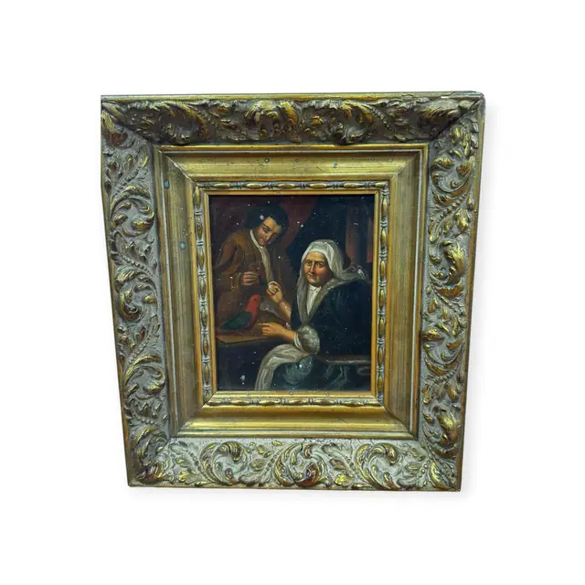
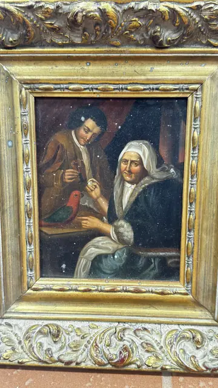

Paintings & Prints
Old Master Style Oil Genre Scene with Parrot, Framed
Unknown · 19th to early 20th century, in a 17th century manner
Price Upon Request


About the Item
A small, darkly lit interior in the seventeenth-century Dutch manner: a young man in a russet-brown jacket leans over a table holding a small glass, while an elderly woman in a white linen coif and dark blue-green shawl sits at right, one hand raised. A scarlet and green parrot perches on the table edge between them, the brightest note in an otherwise deep brown and olive scheme, with a wine-red curtain behind. The paint is smooth and thinly worked with careful modelling of the faces and hands. It sits in a heavily ornamented gilt and gesso frame with a white-washed acanthus outer moulding. Medium: oil on panel or board. Condition: Numerous small white specks and spots across the paint surface, most likely flyspecking or spots of loss/mould in the varnish; frame with chips and losses to the gesso ornament, particularly the lower rail; darkened varnish overall.
Details
- Creator:
- Unknown
- Creation Year:
- 19th to early 20th century, in a 17th century manner
- Dimensions:
- Height: 14.0 in (35.56 cm)
Width: 11.75 in (29.84 cm)
outside of frame - Medium:
- oil on panel or board
- Period:
- 20Th
- Condition:
- Offered in the condition shown in the photographs.
- Reference Number:
- VO-211
- Documentation:
- no certificate present